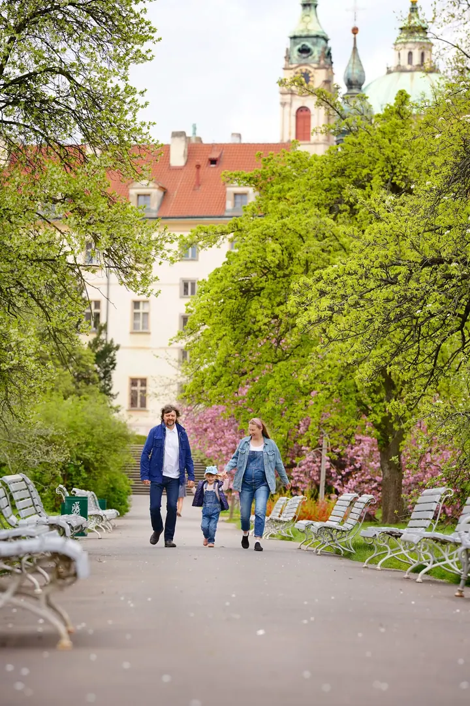

Rodinné a dětské focení
Společný čas mimo běžný režim, třeba procházka, piknik nebo vaše oblíbená hra. Focení se přizpůsobí vám i náladě dětí, bez tlaku a bez napětí.

Jmenuji se Elena Nesterova a v Praze fotím rodiny, děti a miminka v jejich prvních týdnech. Na focení nespěcháme, nefotím podle hodin, ale dokud nemáme výsledek.
Rezervovat termínJsem fotografka a fotoprodukentka. Nejčastěji fotím rodiny v pražských parcích a zahradách, ve světlém ateliéru nebo u vás doma. Rodinné fotky pro mě nejsou jen hezké obrázky, ale vzpomínka na lásku, péči a blízkost, kterou spolu sdílíte.


Vím, že ne každé dítě se rádo fotí, a je to úplně v pořádku. Proto z focení dělám spíš hru, bez tlaku a s ohledem na povahu a náladu dítěte. Přípravu s vámi projdu tak, aby byla snadná a příjemná.
Kromě rodin fotím i portréty a pomáhám s kreativními projekty, kde od nápadu po poslední snímek sestavím tým a zorganizuji celé focení.
Co fotím
Společný čas mimo běžný režim, třeba procházka, piknik nebo vaše oblíbená hra. Focení se přizpůsobí vám i náladě dětí, bez tlaku a bez napětí.
Nejraději fotím miminka u vás doma, v prostředí, které znáte. Všechno probíhá v klidném tempu, s časem na kojení, uklidnění i mazlení.
Kvalitní portrét vám dodá sebevědomí a dobře poslouží i v pracovním životě. Je to investice do sebe sama.
Když chcete neobvyklý koncept, pomohu vám ho dotáhnout od nápadu až k poslednímu snímku. Sestavím tým odborníků a zorganizuji celé focení.
Fotografie jsou ilustrační
Postup
Napište mi nebo zavolejte a probereme, jaké focení si představujete a kde by se vám líbilo fotit.
Pomohu vám s výběrem místa, oblečení i načasováním, aby byla příprava snadná a bez stresu.
Fotíme v klidu a hravě, třeba při procházce nebo pikniku. Nespěcháme, focení není na čas, ale do výsledku.
Vybrané snímky pečlivě upravím a pošlu vám je, ať je máte do rodinných alb a archivu.
Otázky
Fotím v Praze, venku v parcích a zahradách, ve světlém ateliéru nebo u vás doma. Novorozence nejraději fotím doma, kde se vy i miminko cítíte nejlépe.
To je úplně normální. Vytvořím atmosféru hry a důvěry, bez tlaku a s ohledem na povahu i náladu dítěte.
Nefotím podle hodin, ale dokud nemáme výsledek. Počítejte s časem na pauzu, kojení nebo uklidnění.
Ano. Poradím s oblečením, místem i programem, aby focení bylo pro celou rodinu příjemný společný zážitek.